Input alignment
先把不同传感器变成同一份上下文
统一相机、雷达、机器人和地图的时间戳与坐标系，过滤异常帧并缓存历史观测。输出不是彼此分离的数据流，而是一份可被地图模块和决策模块共同消费的同步观测包。
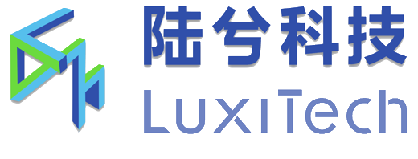
我们的导航能力不是一次性做出来的：先在仿真环境里验证长指令和跨区域路线理解；再把纯视觉方案放到真实机器人上验证落地； 随后补上建图、定位与运动规划能力，最终把视觉、语义地图、点云解释和陆图执行连接成 LuxiNav 在线决策闭环。
导航是具身智能落地的基础能力。我们先验证最直接也最困难的一步：不依赖预置地图，让机器人仅凭第一视角视觉和自然语言指令在真实空间中行动。
输入是任务文本和相机画面，模型直接判断下一步动作。它证明了系统可以从语言到行动闭环，但空间记忆和全局规划能力仍然有限。
因此我们继续引入仿真长指令验证、建图定位模块，以及地图与视觉语言模型的结合，让导航从“看见就走”走向“理解空间后再走”。
每个章节对应一个明确目的：先在仿真里验证长指令路线理解，再上真实机器人证明纯视觉控制落地，然后用建图模块补齐空间底座，最后形成 LuxiNav 的在线技术闭环。
第一阶段先在 Habitat / Luxi-Nav1.0 仿真环境里验证路线理解。仿真的目的，是在可控环境中系统性测试长指令、跨房间、跨区域导航，再把稳定能力迁移到真实机器人上。
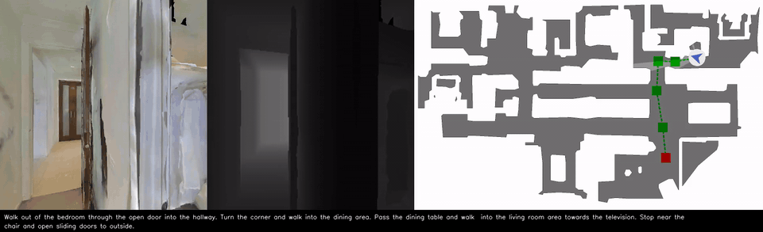
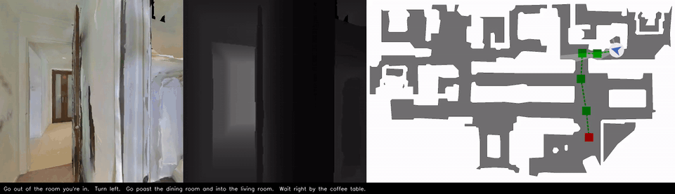
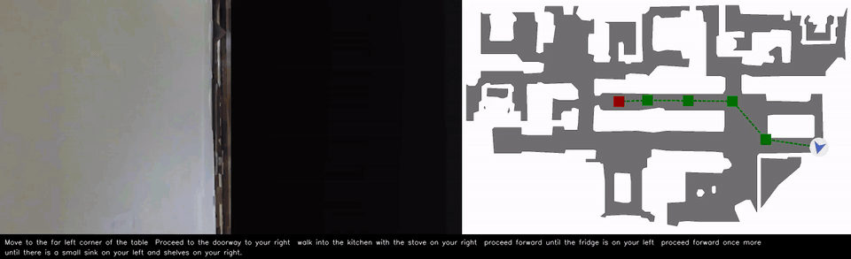
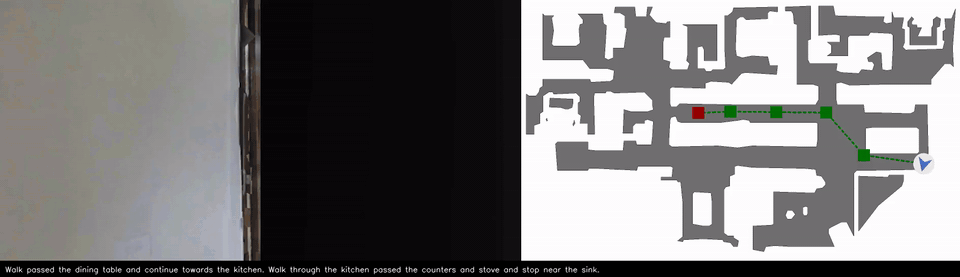
这一阶段的目的，是验证模型在真实机器人上能把自然语言转成连续动作。第一人称展示机器人“看见什么”，第三人称展示任务是否真正完成。

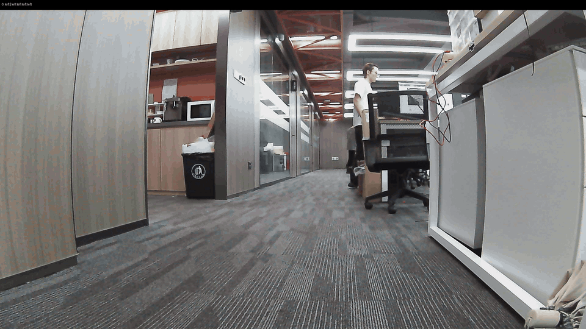


纯视觉方案可以启动闭环，但长期、稳定、可复用的导航需要地图和定位。因此我们加入“陆图”建图模块，为机器狗、无人机、轮式机器人等载体提供稠密 3D 地图与实时定位。
这段 Go2 实机演示把陆图系统的运行链路放在同一画面中：上方是地图与位姿状态，下方是机器人现场视角，用来展示感知、建图、运动规划控制三类能力如何连续工作。
已完成公司环境的雷达点云 PCD 建图，能够形成可用于定位与导航的稠密空间表示。
建图结果可转换为 GLB、OctoMap 体素地图和 SLAM 常用 OccupancyGrid 栅格地图。
定位库可在 3D 点云地图或 2D 栅格地图中识别机器人位置与朝向，并输出给上层模型。
支持基于 RGB 场景进行三维重建，保留物体相对位置关系和三维形状信息。
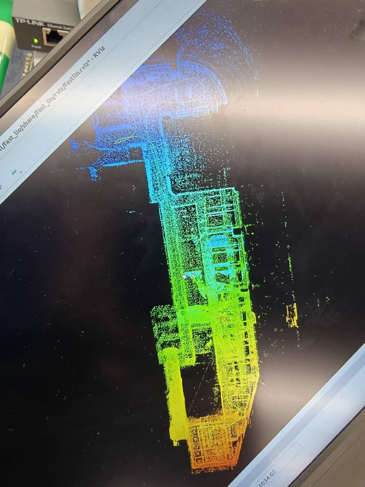
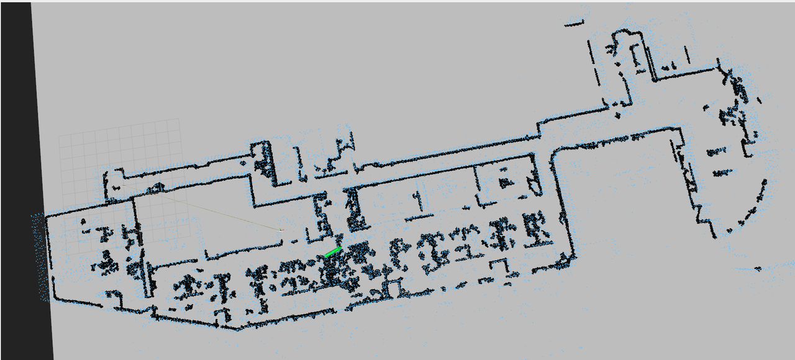
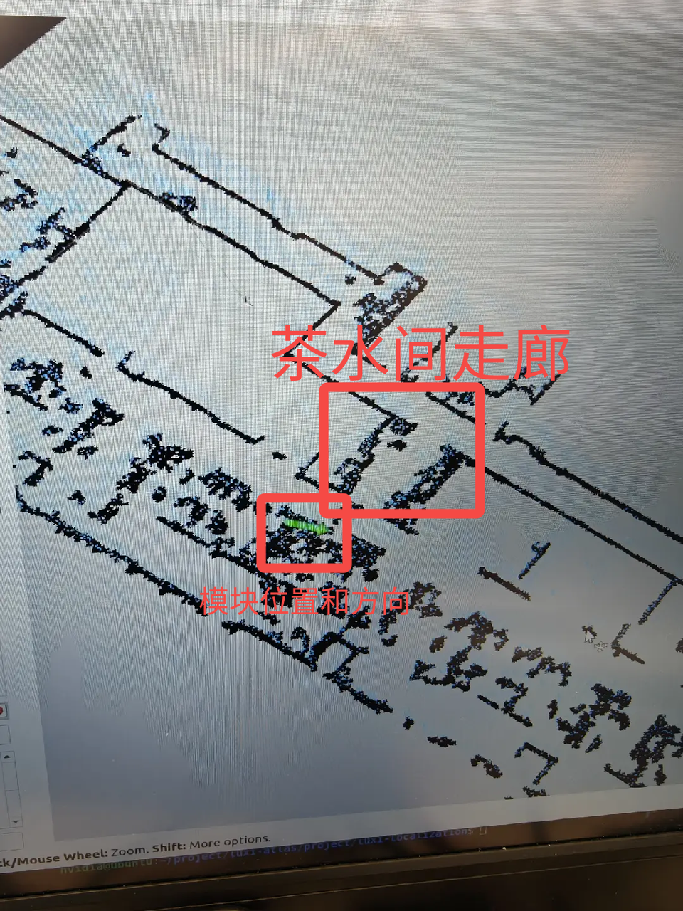
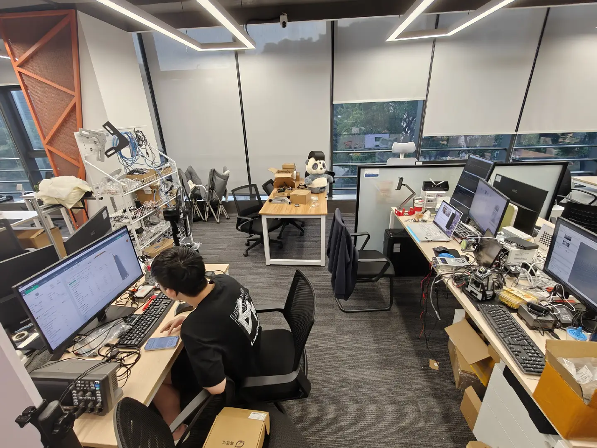
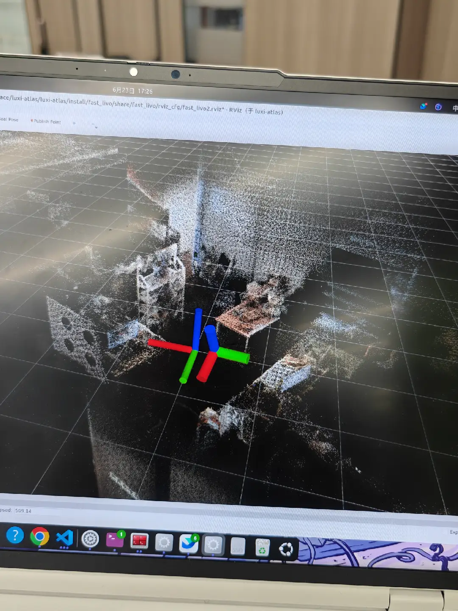
前三阶段沉淀的长指令理解、真实视觉控制和陆图能力，在这里被组织成同一套在线系统。LuxiNav 让模型负责理解任务、维护上下文和选择子目标， 再通过 Action Bridge 把短期动作序列转换成陆图可执行的目标点与朝向，由规划器完成路径、避障、运动控制和安全停止。
统一相机、雷达、机器人和地图的时间戳与坐标系，过滤异常帧并缓存历史观测。输出不是彼此分离的数据流，而是一份可被地图模块和决策模块共同消费的同步观测包。
图像与 2D 语义地图共享 Encoder / Projector，以一致的视觉表示进入 LLM；点云解释器则联合语义图计算目标方位、最近障碍、可通行空间和关键距离，再生成结构化文本补充空间关系。
LLM 输出短期动作序列，Action Bridge 负责解析、轨迹模拟和目标融合；陆图规划器决定真实路径与速度。每轮执行结果都会回传，任务完成时停止，发生阻塞时重新修正子目标。
在完整技术闭环形成之前，我们先用陌生 Habitat 环境验证一个关键问题：机器人能否一边更新已探索地图，一边根据“椅子、马桶、床”等目标语义选择更值得前往的区域。

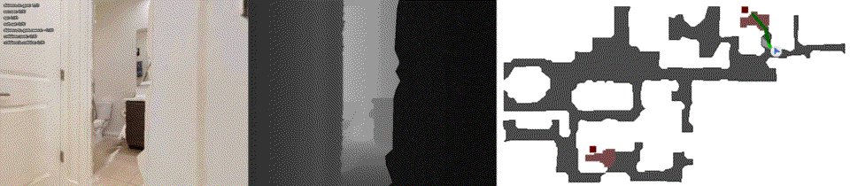
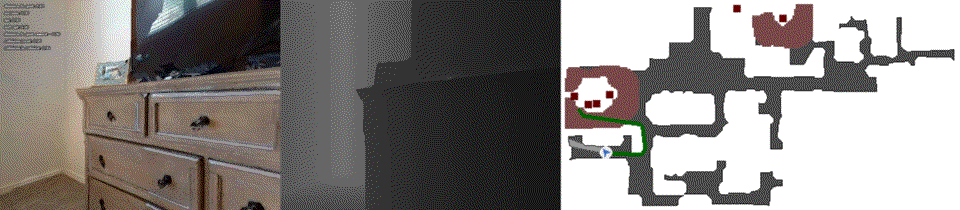
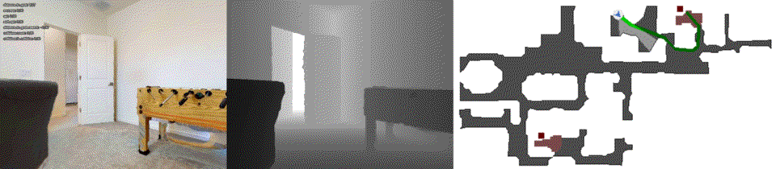
这些实验首先验证了未知布局中的地图更新、可达边界判断和目标语义搜索。新的 LuxiNav 路线不再把它们作为孤立算法展示，而是将其纳入统一接口： 语义图承担长期空间记忆，点云解释器补充几何约束，模型滚动选择子目标，最后由 Action Bridge 和陆图规划器完成真实执行。